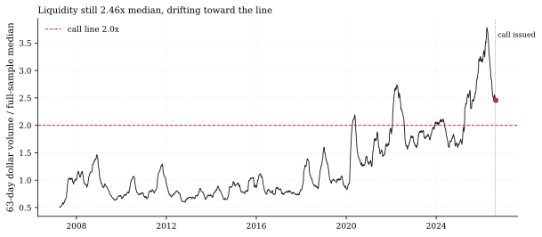
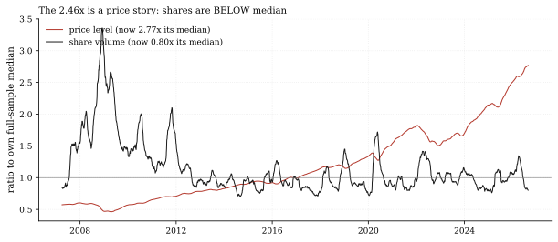
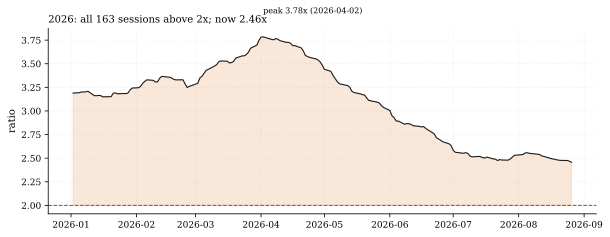

The one-paragraph version. The standing call liquidity-dv63-back-under-2x (issued 2026-08-19, 60 sessions) says the 16-ETF universe's 63-day dollar volume falls back under twice its full-sample median. Through Wednesday it prints 2.46x - $96.7 billion a day against a $39.4 billion median, above the line on all 163 sessions of 2026, down from the April 2 peak of 3.78x and drifting lower at issue pace (2.48x at issue, 5 sessions observed, 55 remaining). The decomposition is the story: the panel's price level stands at 2.77x its own 19-year median while its share volume is 0.80x median - below it. The "liquidity" line the call waits on is, in the main, a price line: at today's share volume, prices would have to fall roughly 19% to carry the ratio under 2x on the price leg alone.
How we worked this problem
This is Liquidity Watch issue 2 and a progress report on the standing call. The dollar-volume ratio is built exactly as the call's grader builds it - rolling 63-session mean of summed Close x Volume across the panel, divided by that series' own full-sample median - so every number reconciles with the Track Record to the decimal. We then decomposed the ratio into two separately normalized legs: the equal-weight average panel price (its 63-day mean against its own full-sample median) and total share volume (same construction). The decomposition is approximate - the two legs multiply to 2.22x against the true 2.46x, a 0.23x residual from cross-sectional composition (volume-weighted versus equal-weighted pricing) - and we report the residual rather than hide it. The frozen call prose's "share volume up just 3.4%" was measured against a 2025-era base at issue; against the 19-year median, share volume stands at 0.80x - both framings are disclosed below.
The data audit
| Source | Coverage | As-of | Role |
|---|---|---|---|
data/cache_panel_2007_2026.parquet | 16 ETFs, daily Close + Volume | 2026-08-26 | ratio, decomposition, call progress |
Call terms (multiple 2.0x, 60 sessions, issued 2026-08-19) from articles/calls.json. The FRED rates cache (as-of 2026-08-13) and the funding cache (as-of 2026-07-31) are not used.
The external read
The outside tape is having both debates at once. Citadel Securities reports May-June shattered monthly activity records with average daily retail cash-equity volumes running 65% above 2025 levels (Citadel 1H 2026), while the low-volume-rally worry circulates alongside it. Our cross-check: the Citadel-versus-us apparent contradiction resolves in the denominator - their 65% is growth over 2025; our 0.80x is against the 2007-2026 median era. Volume IS up on last year and STILL below its long-run level; prices carry the rest. The activity tape outside is consistent: a record-breaking options week powered the early-August equity surge (CNBC, Aug 8), and consolidated whole-market volume runs far above the panel's 16-ETF slice (Cboe market share data).
Exhibits
Exhibit 1 - the ratio and the line. Nineteen years of the 63-day dollar-volume ratio against its own median: the 2021-2022 liquidity wave, the long normalization, and 2026's second wave - all 163 sessions of the year above 2x, now 2.46x and drifting down at roughly the issue-date pace.

Exhibit 2 - the decomposition. Price level (2.77x its median) and share volume (0.80x its median) as separate legs: the share leg has hovered around 1.0x through the post-2022 era - below it on 53.4% of sessions since 2023 - so it is the price leg that lifted the ratio to the call's territory. The residual (2.46x true versus 2.22x product) is composition, disclosed above.

Exhibit 3 - 2026 in detail. The year's peak was 3.78x on April 2; the ratio has since bled lower - the call's 55 remaining sessions need another 0.46x of normalization from here - roughly a third of the April-to-now distance again.

So what - opportunities
- The call's realistic path is the drift, not a shock: the ratio has
- The decomposition tells capacity planners what to watch: the share
- A reusable instrument: the same grader-parity ratio grades any
fallen 1.33x from the April peak in under five months, through monthly close-based drawdowns as deep as 4.5% (June); the same drift repeated covers the remaining 0.46x.
leg (0.80x) says crowding is not the story; if share volume normalizes toward 1.0x while prices hold, the ratio RISES - the call's hit scenario is specifically prices easing or the drift continuing, not participation surging.
future liquidity claim, and the decomposition separates "more trading" from "higher prices" - a distinction most volume commentary skips.
So what - risks
- 0.46x is a long way in 55 sessions at current pace: the drift
- The decomposition's residual (0.23x) is doing real work:
- **The call prose's 3.4%-share-growth framing measured against 2025,
since issue is 0.03x in 5 sessions; linear extrapolation lands near 2.16x at the deadline - a likely miss unless the pace quickens.
composition shifts (which ETFs carry the volume) can move the ratio independently of both legs.
not the median:** readers comparing our 0.80x against Citadel's +65%-vs-2025 must keep the two denominators apart, or the numbers look contradictory when they are not.
Machinery: how this piece was produced
articles/2026-08-27-liquidity-dv63-drift/analysis.py builds the ratio exactly as quantlab/report/calls.py grades it, reads the call's terms from articles/calls.json, decomposes the ratio into price and share legs with the residual reported, and writes every number above to assets/numbers.json plus the three figures (SVG + PNG twins).
Reproduce with: ``bash .venv/Scripts/python articles/2026-08-27-liquidity-dv63-drift/analysis.py ``
Limitations
- 16-ETF universe: whole-market statistics (Cboe consolidated prints)
- The price/share decomposition uses equal-weight average price and
- Volume figures are venue-reported ETF shares, not adjusted for
- Measured through Wednesday 2026-08-26; the drift statistic moves each
measure a different basket than the panel's $96.7B.
total shares; the 0.23x residual reflects composition the two-leg form cannot express.
splits/creations beyond the provider's own adjustment.
session.
Sources - external reading list
| Claim | Source |
|---|---|
| 1H-2026 record participation: retail cash-equity ADV +65% vs 2025 (denominator contrast with our 0.80x-vs-median) | Citadel Securities - 1H 2026 Market Structure & Flows |
| Record-breaking options week powering the early-August equity surge | CNBC, Aug 8 2026 |
| Consolidated whole-market volume context | Cboe - US equities market share |
calls-grader-parity; pandas; matplotlib